VxRail — Procedures¶
Before you begin¶
- Access: vCenter read-only minimum; Administrator role for remediation steps
- Timing: safe to run during business hours unless a step is marked ⚠ (causes interruption)
- Dependencies: no active upgrades or migrations on the same infrastructure
- Logging: capture command output — paste into the change record on completion
Change Readiness Checklist¶
Run this checklist before any VxRail maintenance operation (LCM upgrade, node expansion, disk replacement, network changes).
# 1. Verify vSAN health is all green
esxcli vsan health cluster get
# 2. Confirm resync bytes = 0 (all objects fully synced)
esxcli vsan debug resync list
- [ ] vSAN health is all green —
esxcli vsan health cluster get - [ ] vSAN resync bytes = 0 —
esxcli vsan debug resync list - [ ] All VxRail nodes Online in VxRail Plugin
- [ ] No active vCenter alarms on cluster or hosts
- [ ] DRS is enabled and set to Fully Automated
- [ ] vCenter backup current (VAMI:
https://<vcenter>:5480) - [ ] VxRail Manager VM backup current (Veeam or equivalent)
- [ ] Change window approved and application teams notified
- [ ] Support contract active; Dell SupportAssist enabled on the cluster
Post-Change Validation¶
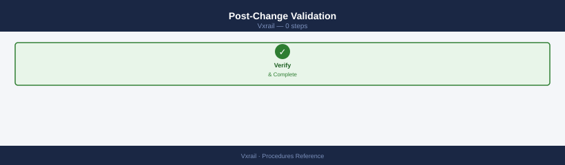
- [ ] All VxRail nodes Online in VxRail Plugin
- [ ] vSAN health all green
- [ ] vSAN resync completed (0 bytes remaining)
- [ ] No new vCenter alarms
- [ ] VMs running normally
- [ ] ESXi version matches expected version (if upgrade was performed)
- [ ] iDRAC hardware health: no new faults
Node Maintenance Mode Procedure¶
VxRail nodes use vSAN as the storage layer. Before entering maintenance mode, vSAN must evacuate all data objects from the node so no data is at risk. This is different from standard vSphere maintenance mode — use the vSAN-aware maintenance mode option.
Verify cluster capacity before entering maintenance mode
If the remaining nodes do not have enough free capacity to hold all evacuated objects, the Full data migration option will stall indefinitely and the host will never enter maintenance mode. Before starting, confirm that the cluster's used space is below approximately 60% so there is headroom for a single node's objects to be redistributed. If you are capacity-constrained, open a Dell support case before proceeding.
Step 1 — Confirm Pre-Conditions¶
# vSAN must be fully synced before entering maintenance
esxcli vsan debug resync list
# Remaining Bytes must be 0 before proceeding
- All VMs must be able to vMotion off the node (DRS Fully Automated)
- Sufficient capacity on remaining nodes to hold evacuated vSAN objects
Step 2 — Enter Maintenance Mode¶
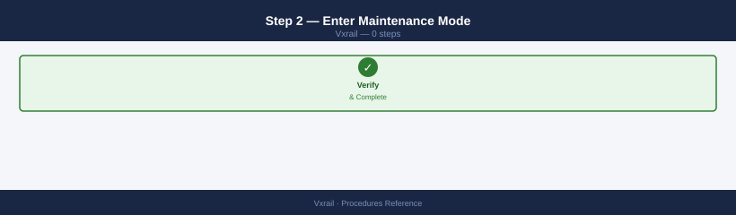
In vCenter: right-click the host → Maintenance Mode → Enter Maintenance Mode
In the dialog, set the vSAN data migration option:
| Option | When to Use |
|---|---|
| Full data migration | Recommended for hardware work — evacuates all vSAN objects off the node |
| Ensure accessibility | Faster; keeps one copy accessible but doesn't fully evacuate — use only for short reboots |
| No data migration | Only if you have no vSAN objects on the node (not typical) |
Select Full data migration for any hardware work or LCM upgrade.
# PowerCLI — enter maintenance mode with full vSAN evacuation
$host = Get-VMHost "vxrail-node-01.example.local"
Set-VMHost -VMHost $host -State Maintenance -VsanDataMigrationMode Full -Confirm:$false
Step 3 — Wait for Maintenance Mode to be Active¶
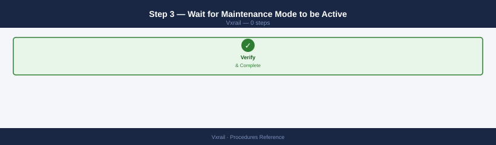
vCenter shows the host icon with a wrench (maintenance) indicator. This can take 10–30 minutes depending on the amount of data to evacuate.
# Monitor evacuation progress
esxcli vsan debug resync list
# Watch for Remaining Bytes to count down to 0
Step 4 — Perform Work¶
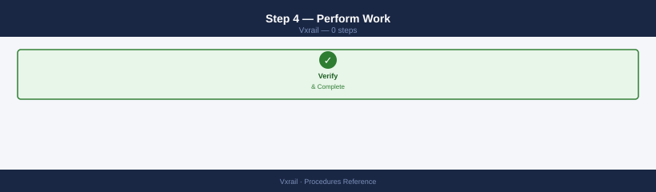
With the node in maintenance mode and VMs migrated off:
- Apply hardware changes, replace failed components, or allow LCM to proceed with upgrade
- iDRAC reboot if needed:
racadm serveraction gracereboot
Step 5 — Exit Maintenance Mode¶
In vCenter: right-click the host → Maintenance Mode → Exit Maintenance Mode
# PowerCLI — exit maintenance mode
Set-VMHost -VMHost (Get-VMHost "vxrail-node-01.example.local") -State Connected -Confirm:$false
Step 6 — Wait for vSAN Resync¶
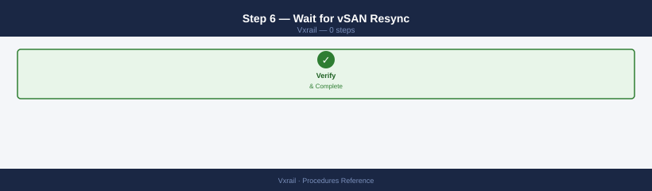
After the node rejoins, vSAN resyncs data back to the node. Do not start another maintenance window until resync completes.
# Poll resync on any cluster node
esxcli vsan debug resync list
# Proceed only when Remaining Bytes = 0
Node Expansion Procedure¶
Adding a node to a VxRail cluster is orchestrated entirely by VxRail Manager. Manual ESXi installation or manual vSphere cluster addition is not supported.
Pre-Expansion Requirements¶
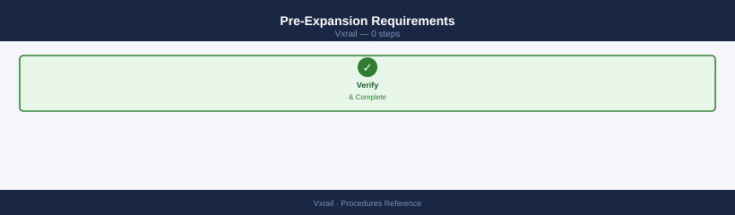
- [ ] New node is racked, cabled, and powered on
- [ ] iDRAC is accessible from the management network and configured with a static IP
- [ ] New node's iDRAC credentials are known (root + password)
- [ ] Node hardware model is compatible with the existing cluster (check Dell VxRail Hardware Compatibility Guide)
- [ ] Available IPs exist in each required network: management, vMotion, vSAN, VM network
- [ ] Existing cluster vSAN health is green and resync = 0
Step 1 — Verify New Node iDRAC Accessibility¶
# Ping the new node iDRAC from the management network
ping <new-node-idrac-ip>
# SSH test
ssh root@<new-node-idrac-ip>
racadm getsysinfo
Step 2 — Initiate Expansion via VxRail Plugin¶
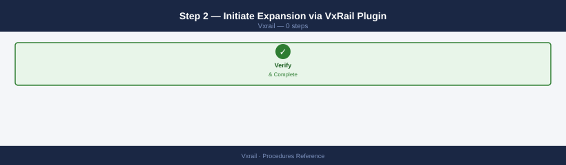
In vCenter: Menu → VxRail → Cluster → Add Node
Follow the wizard:
- VxRail Manager discovers the new node via iDRAC ping
- Validate the node hardware is compatible with the cluster (model, disk configuration)
- Configure network settings for the new node: management IP, vMotion IP, vSAN IP
- Review and confirm — VxRail Manager installs ESXi and joins the node to the cluster automatically
Or trigger via API:
curl -sk \
-X POST \
-H "Authorization: Basic $(echo -n 'mystic:password' | base64)" \
-H "Content-Type: application/json" \
-d '{
"hosts": [{
"idrac": {
"ip": "10.0.100.25",
"username": "root",
"password": "CalvinIdrac1!"
}
}]
}' \
"https://<vxm-ip>/rest/vxm/v1/cluster/expansion"
Step 3 — Monitor Expansion¶
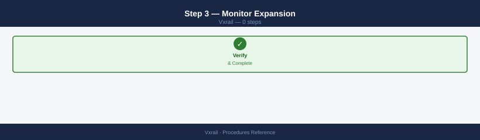
Monitor via: VxRail Plugin → Cluster → Events or vCenter Tasks panel.
Expansion steps performed by VxRail Manager:
- iDRAC discovery and hardware validation
- Network IP assignment
- ESXi installation via Auto Deploy / cluster profile
- Node joins vSphere cluster
- vSAN disk groups claimed on new node
- vSAN rebalancing begins automatically
Step 4 — Wait for vSAN Rebalance¶
After the node joins, vSAN redistributes objects across the now-larger cluster. This is not instantaneous.
# Monitor rebalance on any existing cluster node
esxcli vsan debug resync list | grep -E "Total|Remaining"
# Proceed with no further changes until Remaining Bytes = 0
Step 5 — Post-Expansion Validation¶
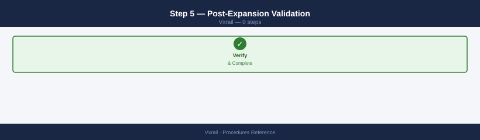
# Confirm new node is visible and version matches cluster
Get-VMHost | Select-Object Name, Version, Build, ConnectionState | Sort-Object Name | Format-Table -AutoSize
# vSAN cluster health
Get-VsanClusterHealthSummary -Cluster "VxRail-Cluster" | Select-Object OverallHealth
# Confirm new node disk groups are in vSAN
# vCenter → Cluster → Configure → vSAN → Disk Management
Disk Replacement Procedure¶
Step 1 — Identify the Failed Disk¶
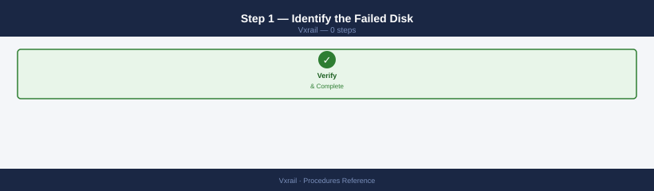
- A vCenter alarm fires indicating a vSAN component is Absent or Degraded
- Navigate to: vCenter → Cluster → Monitor → vSAN → Physical Disk
- Identify the node and disk position of the failed component
- Confirm in iDRAC: SSH to the node's iDRAC and check the event log
# iDRAC event log — look for drive fault events
racadm getsel | tail -30
# Physical disk list from iDRAC
racadm storage get pdisks
# ESXi — identify failed disk in vSAN
esxcli vsan storage list | grep -E "Disk Group UUID|Display Name|In Caching Tier|Is SSD"
Step 2 — Assess vSAN Impact¶
While the disk is failed, vSAN continues to serve data using remaining copies (if FTT > 0 and data is replicated). Check the number of degraded objects:
FTT exceeded — data is at risk of permanent loss
If esxcli vsan debug resync list shows components with zero remaining replicas, vSAN cannot tolerate any further disk or node failure. Do not proceed with the replacement until you have escalated to Dell support and confirmed a recovery path. Replacing the disk at this point without guidance may not recover the objects.
If vSAN shows no remaining replicas for any object (FTT exceeded), treat this as a P1 incident and restore immediately.
Step 3 — Enter Node Maintenance Mode¶
Before physically replacing the disk, put the node in maintenance mode using Full data migration (see Node Maintenance Mode above).
Do not hot-swap without maintenance mode if a rebuild is already active
If vSAN has already started rebuilding objects to other nodes following the disk failure, those objects are temporarily under-replicated. Removing another disk (even the failed one) without first confirming the rebuild is complete risks exceeding FTT and losing data. Verify esxcli vsan debug resync list shows Remaining Bytes = 0, or consult Dell support before proceeding without full maintenance mode.
If the disk failure has already caused vSAN to begin rebuilding on other nodes, you may be able to hot-swap without full maintenance mode — consult Dell support for guidance on whether in-place hot-swap is safe in your cluster configuration.
Step 4 — Hot-Swap the Disk¶
- Dell PowerEdge nodes support hot-swap of SAS/SATA/NVMe drives with the carrier
- The failed drive's LED will be amber on the front panel
- Physically remove the failed drive and insert the replacement in the same slot
- iDRAC will detect the new drive automatically
Step 5 — Exit Maintenance Mode and Claim Disk in vSAN¶
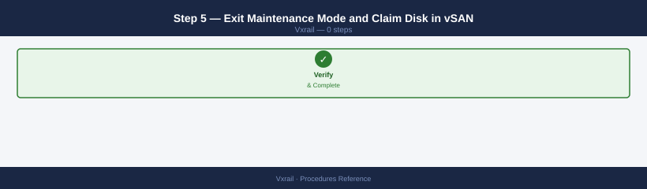
Exit the node from maintenance mode (see Step 5 of the maintenance mode procedure).
Once the node is back Online, claim the new disk in vSAN:
vCenter → Cluster → Configure → vSAN → Disk Management → Claim Disk
Select the new unclaimed disk and add it to the existing disk group (or create a new disk group if the cache disk was also replaced).
Step 6 — Monitor Rebalance and Rebuild¶
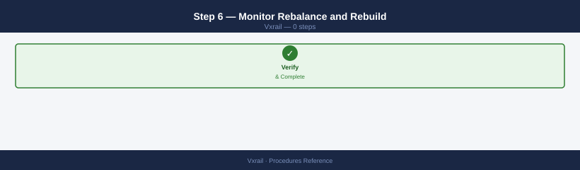
# Watch vSAN rebalance after disk claim
esxcli vsan debug resync list
# Wait for Remaining Bytes = 0 before declaring the replacement complete
Validate in vCenter: Cluster → Monitor → vSAN → Health — all checks should return to green.
Run VxRail LCM Upgrade¶
- VxRail Manager → LCM → Upgrade
- Select the target version — VxRail Manager queries the VxRail update repository and shows available releases
- Click Run Compatibility Check — validates that all nodes, firmware, and vCenter versions are compatible with the target release
- Resolve any compatibility failures before proceeding (common: vCenter version too old, incompatible firmware baseline)
- Click Download Bundle — VxRail Manager downloads the upgrade bundle (may take time depending on bundle size)
- Schedule the upgrade window — confirm with application teams; a rolling upgrade causes brief per-node vMotion activity but no cluster-wide outage
- Click Start Upgrade — VxRail Manager upgrades one node at a time: places node in maintenance mode, applies firmware and ESXi upgrade, exits maintenance mode, waits for resync, then moves to the next node
- Monitor progress: VxRail Manager → LCM → Events
- Post-upgrade validation: run the Post-Change Validation checklist; confirm all nodes show the new ESXi and VxRail version
Add a Node to the VxRail Cluster¶
- Rack the new node in the VxRail rack and connect all cables: management, vMotion, vSAN, and VM network uplinks
- Configure iDRAC with a static management IP and verify it is reachable from the management network
- VxRail Manager → Add Node — VxRail Manager discovers the new node via the iDRAC IP
- Complete the Add Node wizard:
- Confirm node hardware is compatible with the existing cluster (model and disk configuration)
- Configure IP addresses: management, vMotion, vSAN for the new node
- Map the node to the correct VxRail network profile
- Submit — VxRail Manager installs ESXi on the new node, joins it to the vSphere cluster, and claims vSAN disk groups automatically
- Wait for vSAN rebalance to complete (
esxcli vsan debug resync list— Remaining Bytes = 0) - Run the Post-Change Validation checklist
Replace a Failed Disk¶
- In vCenter: Cluster → Monitor → vSAN → Physical Disks — identify the failed disk (shows as Absent or Degraded)
- Note the node and disk slot from the physical disk detail pane
- Confirm the failure in iDRAC: SSH to the node's iDRAC →
racadm getsel | tail -30— look for drive fault events - Initiate vSAN evacuation for the node: put the node in maintenance mode with Full data migration (see Node Maintenance Mode)
- Physically hot-swap the failed disk — the failed drive's carrier LED is amber; insert the replacement in the same slot
- Verify iDRAC detects the new disk:
racadm storage get pdisks - Exit maintenance mode — the node rejoins the cluster
- VxRail Manager automatically reclaims the new disk into the existing vSAN disk group; monitor in vCenter → Cluster → Configure → vSAN → Disk Management
- Wait for vSAN rebuild to complete (
esxcli vsan debug resync list— Remaining Bytes = 0)
Configure SMTP for VxRail Alerts¶
- VxRail Manager → Settings → SMTP
- Configure:
- Relay host — SMTP relay FQDN or IP (e.g.,
smtp.example.local) - Port — typically 25 (unauthenticated relay) or 587 (STARTTLS)
- From address — sender address for VxRail alert emails (e.g.,
vxrail-alerts@example.local) - Add alert email recipients: enter one or more recipient addresses
- Click Test Email — verify a test message is received at the configured address
- Save — VxRail Manager will now send email alerts for hardware faults, vSAN health changes, and upgrade events
Update VxRail Manager Credentials¶
Required when vCenter, PSC, or service account passwords are rotated outside of VxRail Manager.
- VxRail Manager → Settings → Credentials
- Locate the credential entry to update (vCenter admin, PSC admin, or SDDC Manager if VCF-managed)
- Click Edit → enter the new password
- Click Test Connectivity — VxRail Manager validates the credential against the target system
- Save — VxRail Manager resumes normal operations using the updated credential
If connectivity fails after a credential update, verify the password was entered correctly and that the account has not been locked.
Generate VxRail Log Bundle¶
Used for Dell support case submission or in-house troubleshooting.
- VxRail Manager → Support → Log Bundle
- Select the scope:
- All nodes — includes logs from every node in the cluster (large bundle; use for cluster-wide issues)
- Specific node — include only the affected node's logs (use for single-node hardware issues)
- Click Generate — VxRail Manager collects logs from all selected nodes and assembles the bundle
- When generation completes, click Download — save the
.zipfile locally - Attach the bundle to the Dell support case via the Dell SupportAssist portal or upload directly to the support case
Configure iDRAC Access on VxRail Node¶
iDRAC provides out-of-band access for hardware monitoring, remote console, and node discovery.
- Connect to the iDRAC management IP via browser (
https://<idrac-ip>) — default credentials are on the node's service tag label - Navigate to iDRAC Settings → Network → configure a static IP, subnet, gateway, and DNS
- Navigate to iDRAC Settings → User Authentication → set a strong admin password and disable the default root account if policy requires
- Configure IPMI over LAN: iDRAC Settings → Network → IPMI Settings → enable if required for third-party monitoring tools
- Configure Redfish API access: iDRAC Settings → Services → Redfish → enable for programmatic OOB management
- Test remote console: Virtual Console → Launch — verify KVM access to the host
Check VxRail Cluster Compliance¶
Compliance checks validate that all nodes are running the expected firmware and configuration baseline.
- VxRail Manager → Inventory → Cluster
- Review the compliance status column for each node — all nodes should show Compliant
- For any node showing Non-Compliant, click the node to expand the detail view:
- Firmware drift — node firmware version does not match the cluster's active firmware baseline; remediate via LCM
- Configuration drift — host profile or VxRail configuration differs from the cluster template; investigate and re-apply profile via vCenter Host Profiles
- After remediation, re-run the compliance check to confirm all nodes return to Compliant status
- Schedule periodic compliance checks (monthly recommended) as part of ongoing operational governance
Remove a Node from VxRail Cluster (Decommission)¶
Use this procedure to permanently remove a node from the VxRail cluster — for example, to retire aging hardware or reduce cluster size. This is irreversible without a full re-expansion.
Minimum node count
A vSAN cluster requires a minimum of 3 nodes (4 for two-host fault tolerance). Removing a node from a 3-node cluster will leave vSAN with insufficient hosts to sustain FTT=1. Confirm remaining node count before proceeding; if at minimum, contact Dell for guidance on transitioning to a 2-node ROBO configuration.
Step 1 — Pre-Decommission Checks¶
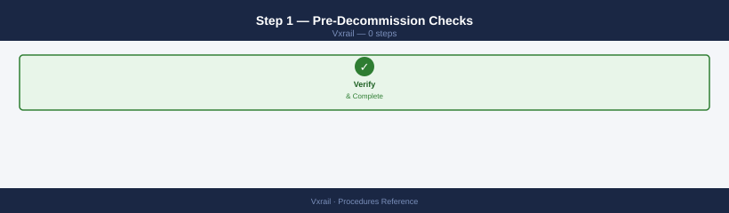
# Confirm vSAN health is green and resync = 0
esxcli vsan debug resync list
# Verify no components will become non-compliant after removal
esxcli vsan storage list | grep -E "UUID|Compliant"
Check that the cluster has sufficient free capacity on remaining nodes to absorb all vSAN objects from the node being removed. Used cluster capacity must be below approximately 60% before starting.
Step 2 — Migrate All VMs Off the Node¶
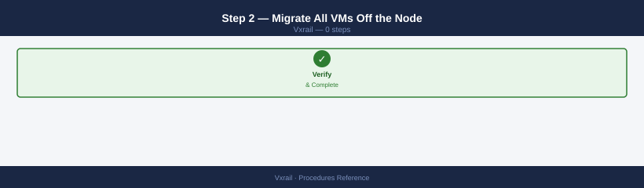
Use vSphere DRS or manual vMotion to move all running VMs to other cluster nodes. This is a separate step from vSAN evacuation.
# PowerCLI — vMotion all VMs from the target node
$sourceHost = Get-VMHost "vxrail-node-04.example.local"
Get-VM -Location $sourceHost | Move-VM -Destination (Get-VMHost | Where-Object {$_.Name -ne $sourceHost.Name} | Get-Random)
Step 3 — Enter Maintenance Mode with Full Data Migration¶
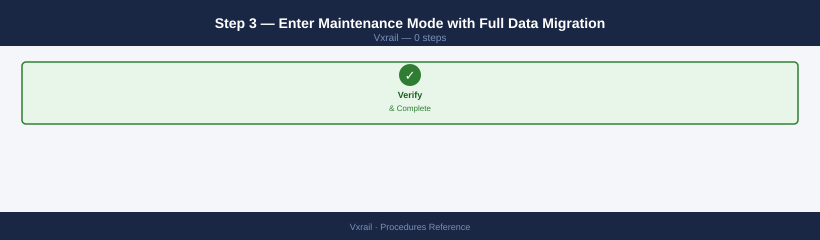
Put the node in maintenance mode using Full data migration so vSAN fully evacuates all objects to remaining nodes. See Node Maintenance Mode for the detailed steps.
Wait for resync to reach 0 bytes before proceeding:
Step 4 — Remove the Node via VxRail Plugin¶
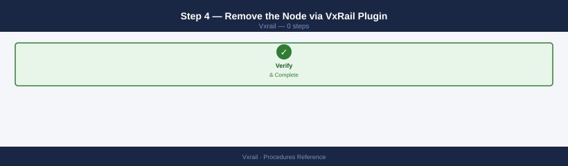
In vCenter: Menu → VxRail → Cluster → Remove Node
Select the node to remove and confirm. VxRail Manager:
- Validates that vSAN has no objects on the node (requires maintenance mode + full evacuation)
- Removes the host from the vSphere cluster
- Un-claims the node's disk groups from vSAN
- Removes the node record from VxRail Manager inventory
Step 5 — Post-Removal Validation¶
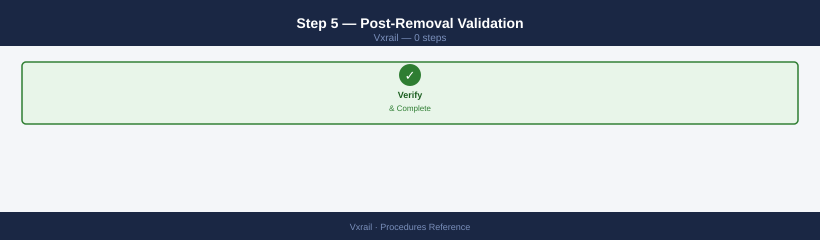
# Confirm vSAN cluster is healthy with the reduced node count
esxcli vsan health cluster get
# Confirm object compliance on remaining nodes
esxcli vsan debug resync list
- [ ] Removed node no longer appears in vCenter host list
- [ ] vSAN health all green
- [ ] Resync = 0 bytes
- [ ] Cluster shows correct node count in VxRail Plugin
- [ ] VMs that were running on the removed node are running normally on remaining nodes
Step 6 — Physical Removal¶
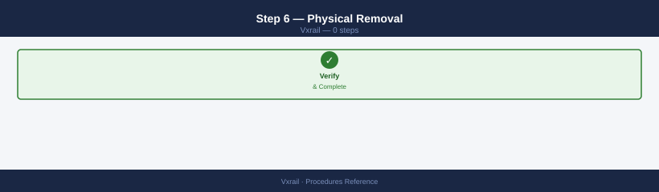
Once the node is fully deregistered: power off the node (racadm serveraction graceshutdown), disconnect cables, and remove from rack. The node retains its ESXi installation; factory-reset via RASR if redeploying elsewhere.
Renew VxRail Manager Certificate¶
VxRail Manager presents a TLS certificate for its UI and API endpoints. This certificate must be renewed before expiry to prevent browser warnings and API authentication failures.
Option A — LCM-Managed Certificate (Recommended)¶
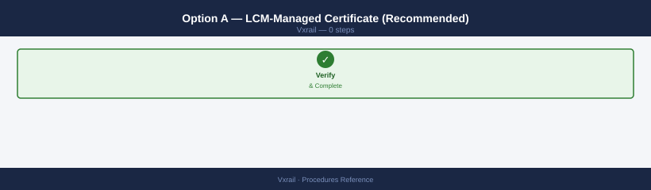
If VxRail is integrated with Aria Suite Lifecycle:
- LCM → Lifecycle Operations → Environments → VxRail card → Replace Certificate
- Select the new certificate from the LCM Locker (import it first via Locker → Certificates if not already there)
- Confirm — LCM pushes the cert to VxRail Manager and restarts its web service
- Verify: browse to
https://<vxm-fqdn>and confirm the browser shows the new certificate expiry date
Option B — Direct API Replacement (No LCM)¶
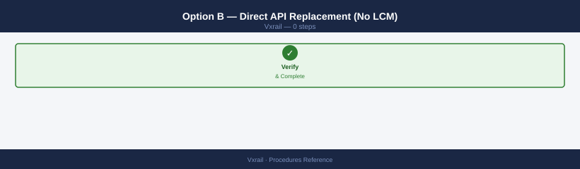
# Step 1 — Generate a CSR from VxRail Manager
curl -sk \
-X POST \
-H "Authorization: Basic $(echo -n 'mystic:<password>' | base64)" \
-H "Content-Type: application/json" \
-d '{"common_name":"vxm.example.local","sans":["vxm.example.local","10.0.100.10"]}' \
"https://<vxm-ip>/rest/vxm/v1/system/certificates/csr" | python3 -m json.tool
# Save the returned CSR and submit to your CA to obtain a signed certificate
# Step 2 — Upload the signed cert and private key to VxRail Manager
curl -sk \
-X PUT \
-H "Authorization: Basic $(echo -n 'mystic:<password>' | base64)" \
-H "Content-Type: application/json" \
-d '{
"certificate": "<PEM cert content, single line with \\n>",
"private_key": "<PEM key content, single line with \\n>"
}' \
"https://<vxm-ip>/rest/vxm/v1/system/certificates"
After uploading, VxRail Manager restarts its web service. Allow 1–2 minutes for the restart, then verify via browser that the new certificate is in effect.
Reconfigure Node Network Settings¶
Use this procedure when a deployed VxRail node's management, vMotion, or vSAN IP addresses need to change — for example, when renumbering the management network.
Network changes require a maintenance window
Changing IPs on an active node causes brief vMotion interruption and vSAN connectivity loss during the change. Schedule this during a maintenance window and pre-notify application teams.
Step 1 — Pre-Check¶
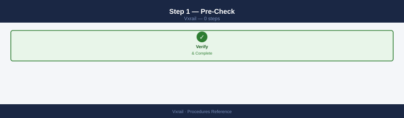
Verify all replacement IPs are reserved in IPAM and DNS is updated to the new management IP (forward and reverse).
Step 2 — Enter Maintenance Mode¶
Put the node in maintenance mode with Ensure accessibility (not Full data migration — IP changes don't require full evacuation):
Set-VMHost -VMHost (Get-VMHost "vxrail-node-02.example.local") -State Maintenance -VsanDataMigrationMode EnsureAccessibility -Confirm:$false
Step 3 — Reconfigure IPs via VxRail Manager¶
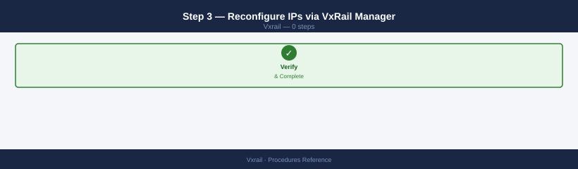
VxRail Manager → Inventory → Nodes → select node → Edit Network Settings
Update: - Management IP and hostname - vMotion IP - vSAN IP
Confirm — VxRail Manager updates ESXi vmkernel adapter configurations and updates its own inventory.
Step 4 — Update iDRAC and DNS¶
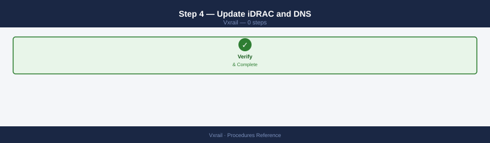
# Update iDRAC IP if it also changed
racadm set iDRAC.IPv4.Address <new-idrac-ip>
racadm set iDRAC.IPv4.Netmask <mask>
racadm set iDRAC.IPv4.Gateway <gateway>
Update DNS: add A and PTR records for the new management IP; remove or update the old records. Verify from another host:
Step 5 — Exit Maintenance Mode¶
Step 6 — Validate¶
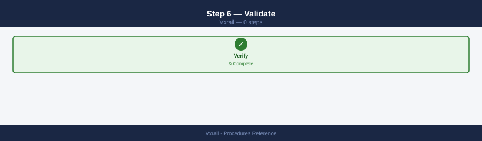
# Ping the new management IP from the network
ping <new-management-ip>
# Verify vSAN sees the node with the new IPs
esxcli vsan debug resync list
esxcli vsan health cluster get
- [ ] Node Online in VxRail Plugin with new IP
- [ ] vCenter shows host at new management IP
- [ ] vSAN health green, resync = 0
- [ ] vMotion successful from/to the reconfigured node (test a vMotion)
- [ ] iDRAC accessible at new IP (if changed)
See also¶
Verify¶
- Alarms: vSphere Client → Home → Alarms — no new critical alarms after the operation
- Events: monitor the vCenter Events view for the affected object for 5 minutes
- Health check: run the morning health-check sequence for the affected product tier